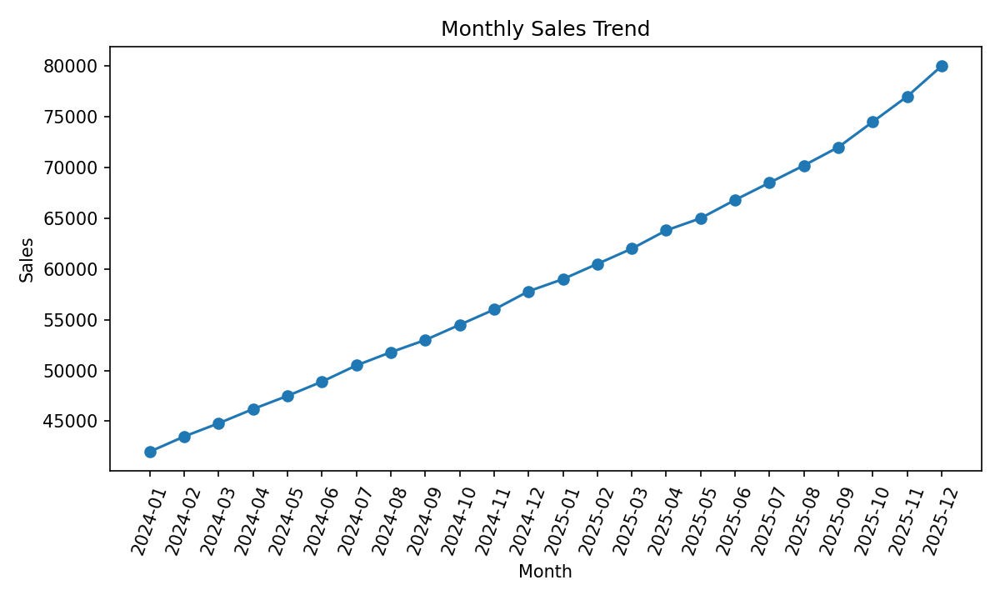
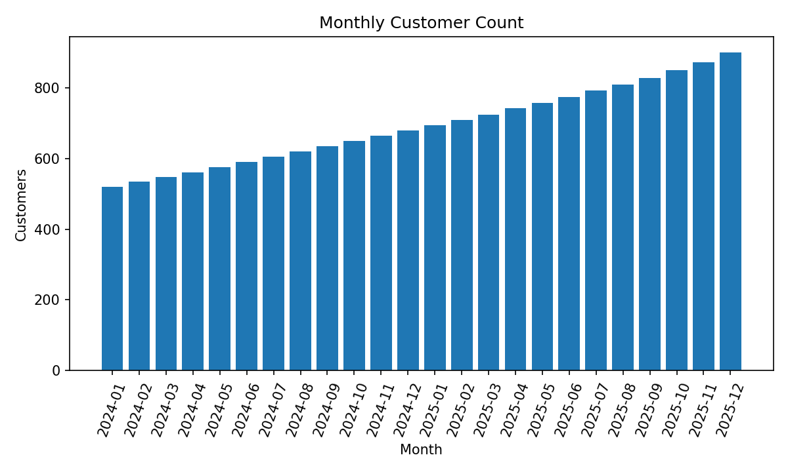
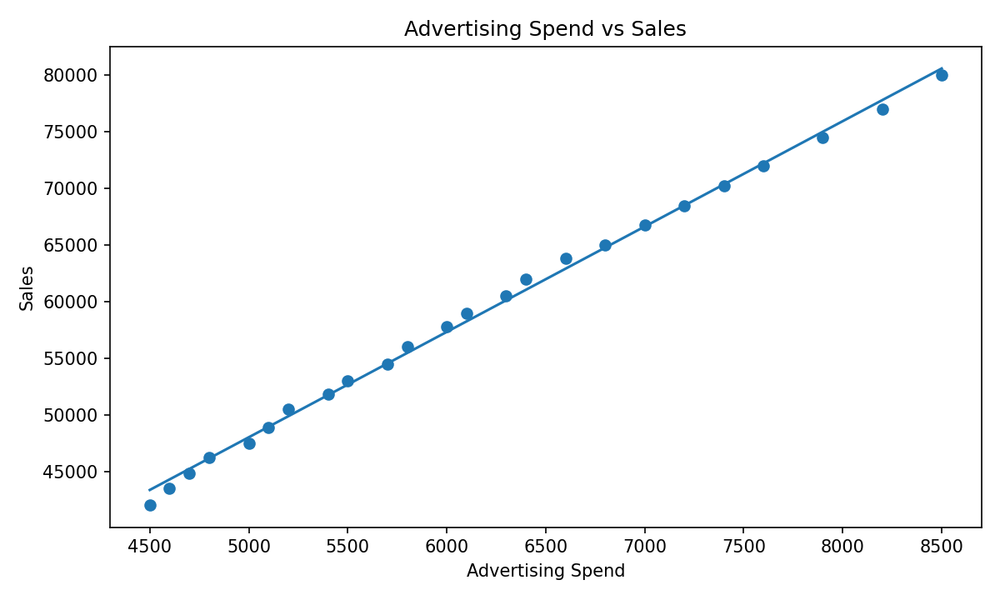
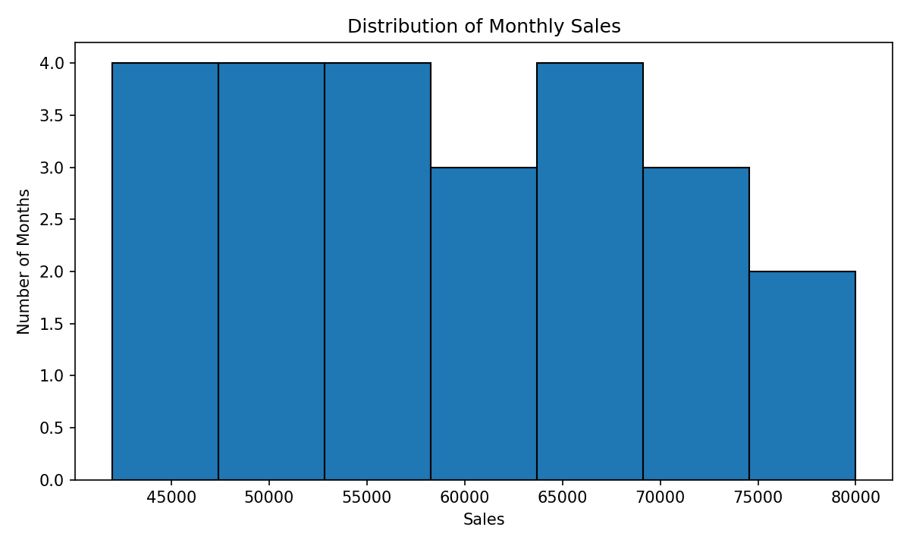
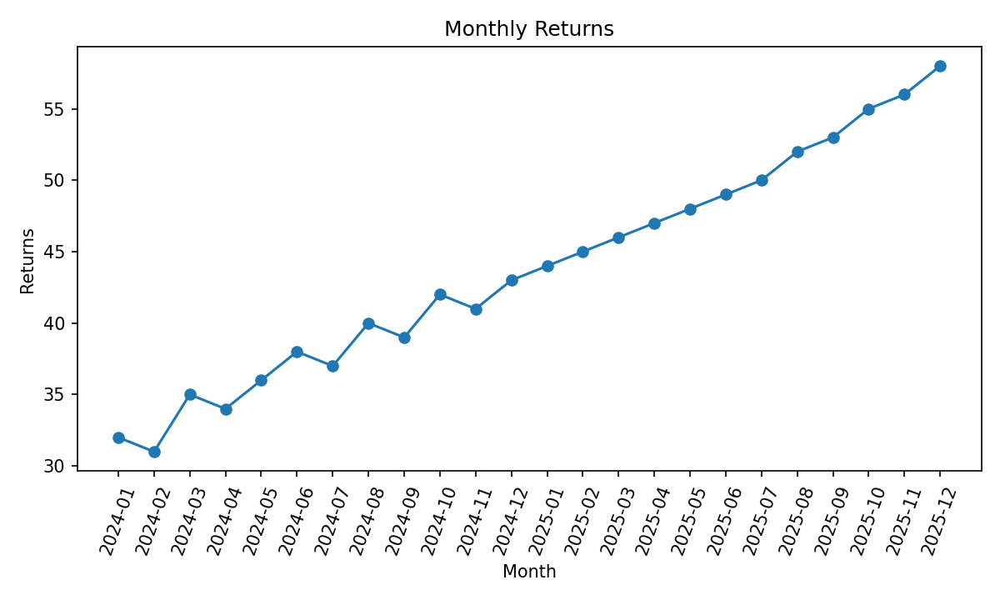

Author: Sayooj Sathiyan T
Enrollment No.: 2505101270260
This project analyses monthly retail sales using R. It studies sales, advertising spend, customers, average order value and returns.
sales_data <- read.csv("monthly_sales_data.csv")str(sales_data)
colSums(is.na(sales_data))
sum(duplicated(sales_data))
sales_data <- sales_data[!duplicated(sales_data), ]The dataset contains 24 monthly records with no missing or duplicate records.
| Measure | Value |
|---|---|
| Total sales | 1,415,800 |
| Mean monthly sales | 58,991.67 |
| Median monthly sales | 58,400.00 |
| Sales standard deviation | 11,113.72 |
| Mean customers | 693.33 |
| Advertising–sales correlation | 0.999 |
| Customer–sales correlation | 1.000 |
| Total returns | 1051 |

The graph shows an upward sales trend over the study period.

Customer counts generally increase across the period.

There is a strong positive association between advertising spend and sales in this sample.

The histogram displays the spread of monthly sales.

Returns generally rise along with the scale of monthly activity.
The project demonstrates importing, cleaning, statistical exploration and visualization using R. The sample shows increasing sales and customers and strong positive associations between sales and both advertising expenditure and customer count. These correlations describe the sample and do not prove causation.